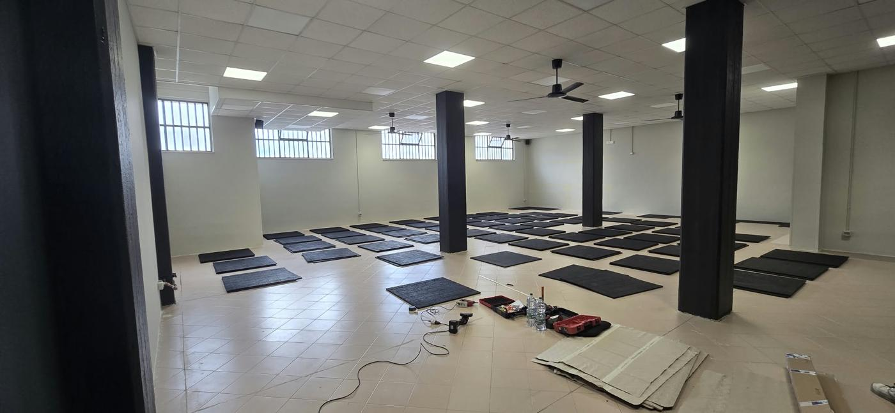

Un tecnico,non uncall center.
TecnoFit è Antonio Grassi. Da Fasano segue palestre, centri benessere e studi in Puglia, Basilicata, Calabria e Campania. Quando scrivi, risponde chi poi viene a riparare la macchina.

Come lavoriamo.
Puntualità
Interventi entro 48 ore dalla segnalazione.
Chiarezza
Ti diciamo cosa facciamo e quanto costa prima di iniziare.
Cura
Ripariamo, collaudiamo e lasciamo il centro pulito e in ordine.
Da Fasano a tutto il Sud.
- Puglia
- Basilicata
- Calabria
- Campania
Raccontaci il guasto.
Tre scelte e il messaggio è pronto. Ti rispondiamo su WhatsApp e fissiamo l'intervento.
- Ci scrivi con macchina, problema e una foto
- Ti rispondiamo e fissiamo l'intervento
- Interveniamo entro 48 ore
- Ripariamo e collaudiamo prima di andare via
Contatti.
- Azienda
- Tecno Fit di Antonio Grassi
- Sede
- Viale dei Colli 51, Laureto di Fasano (BR) 72015
- WhatsApp e telefono
- +39 376 080 9432
- tecnofitantonio@gmail.com
- Zone servite
- Puglia, Basilicata, Calabria, Campania
- P. IVA
- 02808850743